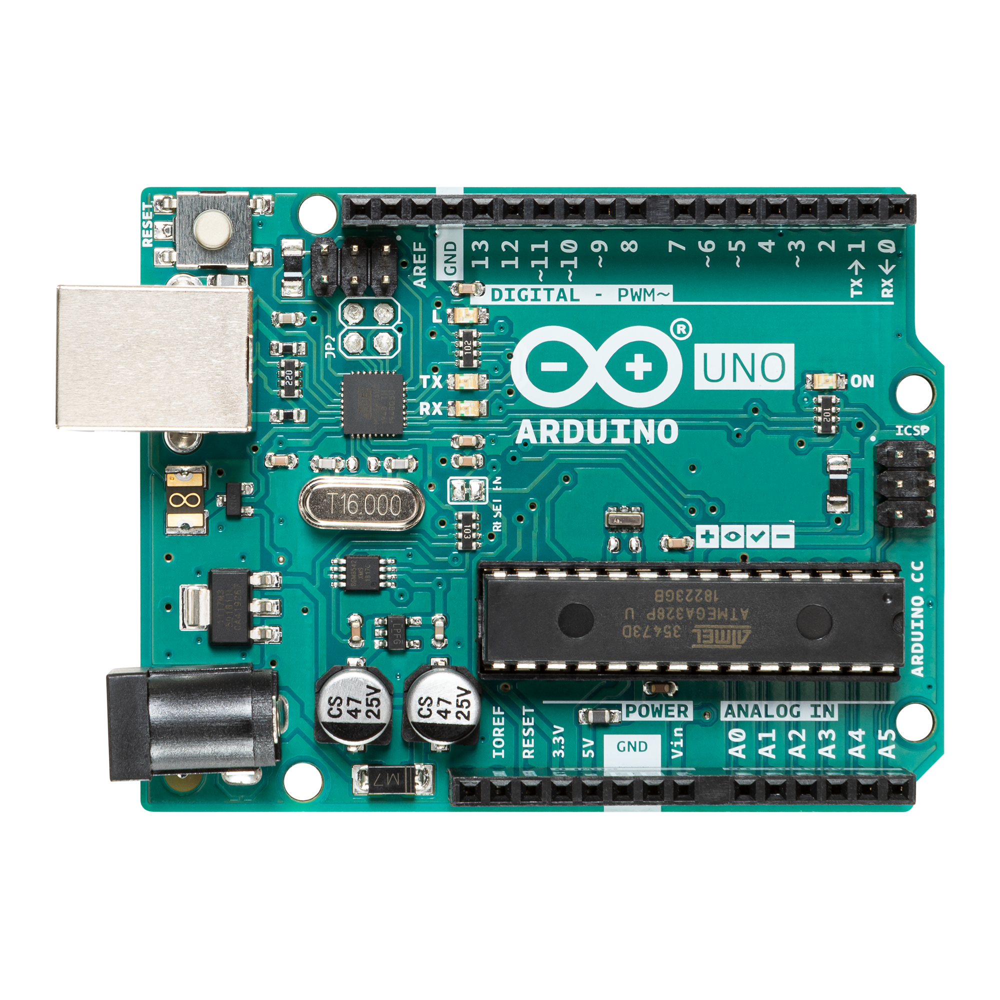

Acerca de mi
cesar leonardo torres bolaños, segundo semestre de IA,me gusta el boing de mango y las sabritas picantes aparte que me gusta mucho pasar tiempo con amigos y familia

Creado por: cesar torres